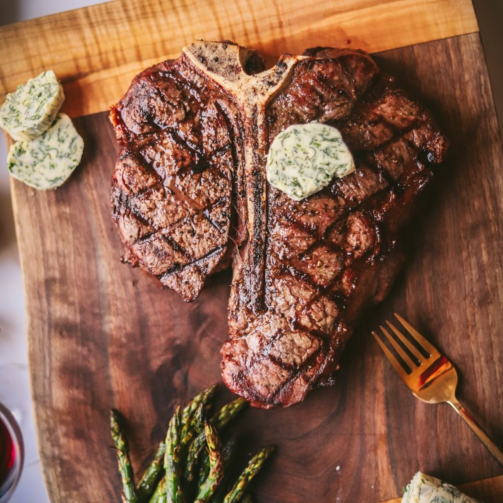

Description
Crosscut from the forward section of the short loin on a steer's middle back, a T-bone steak
contains a strip of the top loin and a chunk of tenderloin, both desired cuts on their own.
A T-shaped bone from the lumbar separates the two pieces.
The T-bone combines the meaty flavor of a strip steak, often called a New York strip when it's
sold on its own, with the signature tenderness of the filet mignon.
Ingredients
- 1 1/2 lb bone-in T-bone Steak
- Salt
- Pepper
- 1 tsp Canola oil
Steps
- Preheat oven to 450 degrees F. Have steak defrosted.
- Heat pan over high heat. Pat dry steak and season with salt and pepper.
- Add oil to a smoking pan.
- Add steak and reduce heat slightly.
- Cook each side for about 4 minutes.
- Transfer pan to oven and roast until the steak is about 120F; This should take about 6-8
minutes.
- Let rest for 10 minutes.
- Cut steak and serve. Enjoy!